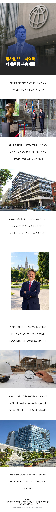

세계은행그룹 부총재 '한국인 출신' 임명.jpg
댓글
주요 이력:• 아시아개발은행(ADB) 입사 (1993년)
• ADB 행정국장 (2014년~2018년)
• ADB 지속가능개발·기후변화국장 (2018년~2021년)
• 아시아개발은행(ADB) 사무총장 (2021년~2024년) — 한국인으로서 15년 만의 ADB 최고위급 진출
• 글로벌 에너지 연합(GEAPP) 최고경영자(CEO) (2024년~현재)
93년에 ADB 가는게 쉬워보이진 않는데..
아무리 나라에서 밀어줬다고 이게 무슨ㅋㅋㅋ
신현송 다음 초엘리트인가보네.
한국인이 있는곳이 국장이다
이제, 세계가 국장이 된다!
시발 그래서 내 주식이 미장이건 국장이건 다 개박살나는거구나

다음에살것좀 알려줘 숏치게

아 어쩐지 미장 개박살나드라
한은 차기 총재들 차곡차곡 리스트업되네 ㅋㅋ

국장은 장소가 아니다
세계에서 암약하는 한국인...
오ูููㄷㄷููู
코딱지만한 나라에 인재들이 많긴 하네
코스피좀 살려줘..
분명 축하해야할 사안이지만 한국인이 뭐 어쩌고 했다는거 이제 좀 그만 자랑스러워해도 될듯
그냥 저 사람 개인의 성과이지 한국인이라서 특별한건 아니잖슴;;
개인이 자신이 속한 사회적 집단을 통해 자아 개념과 자아 존중감을 형성하는건 어느정도 필요하다고는 생각하지만 너무 과하면 극우 극좌랑 다를바 없음;;
개발도상국때는 다같이 힘드니까 이해하는데 지금이나 그때나 그냥 똑같은 수준인듯..
아직도 2002 월드컵 빨고있는거에 멈춘거같음
유퀴즈 나오시려나
이 글 바이럴 2개월만 되면 나옴
무슬람의원 당선됐다고 이슬람들 박수치는 영상 글에는 댓글이 매우 적대적이었는데
같은 한국인이 됐다는 글은 댓글 온도차가 달라서 좀 어색하긴 하네
저건 국제기구긴 함. 소말리아계라던데 미네소타에선 지원금 횡령의혹 있었는데 거긴지 모르겠음
한국 출신 이런게 아니고 한국인 출신 이래쓰는게 뭐가 이유가 있나 ?? 국적 바꿨단 소리임??
나도 놀람
한은 신총재 내려 오면 다음 타자인가 ㅋㅋㅋ